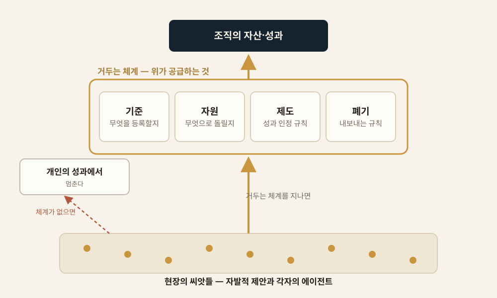
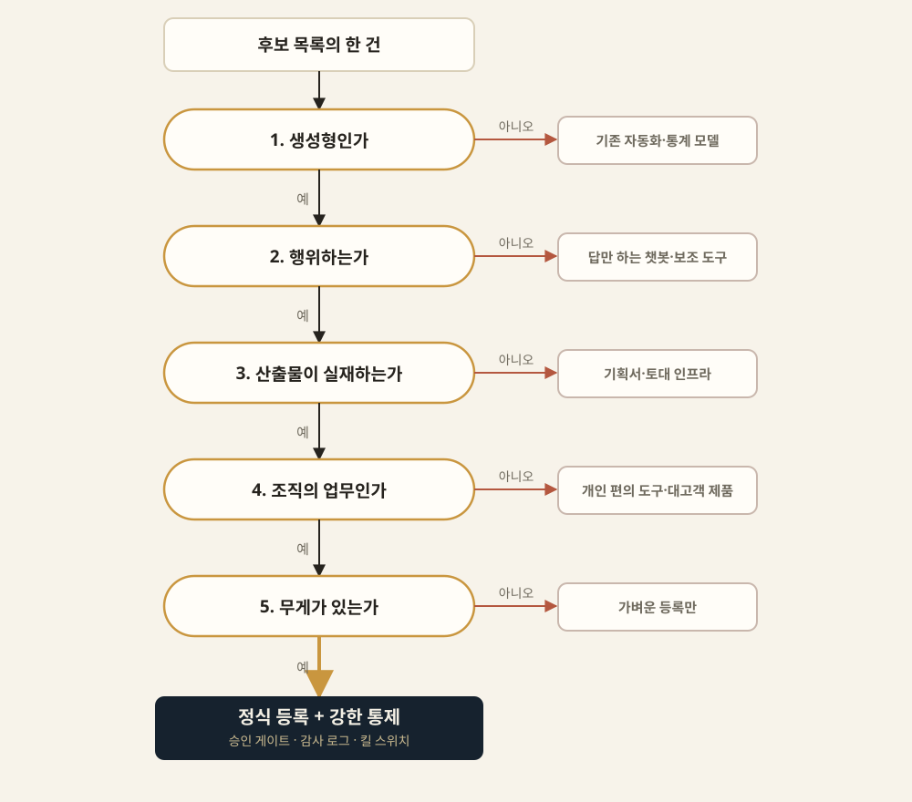
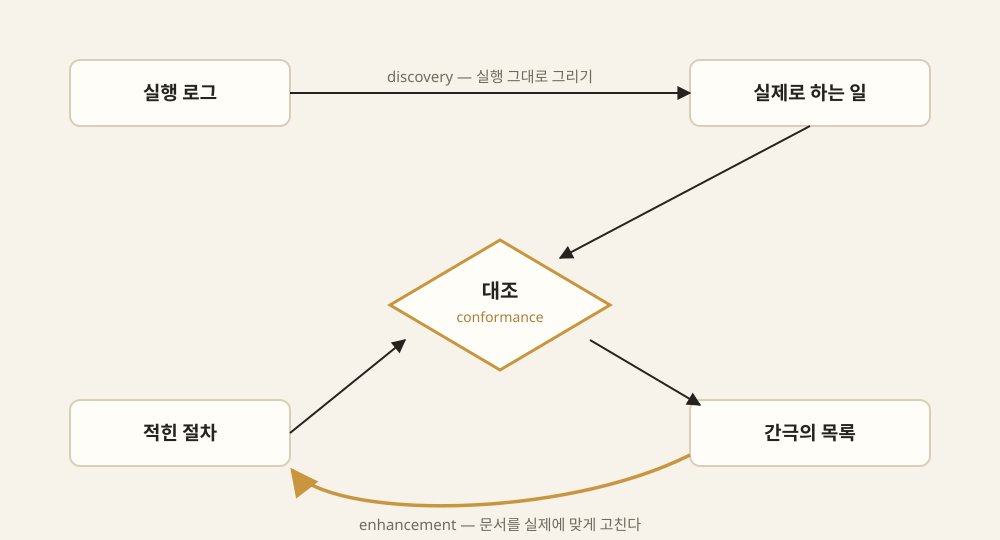
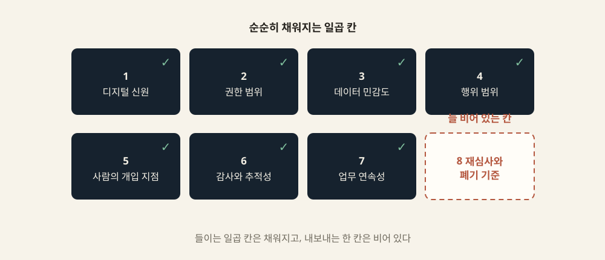
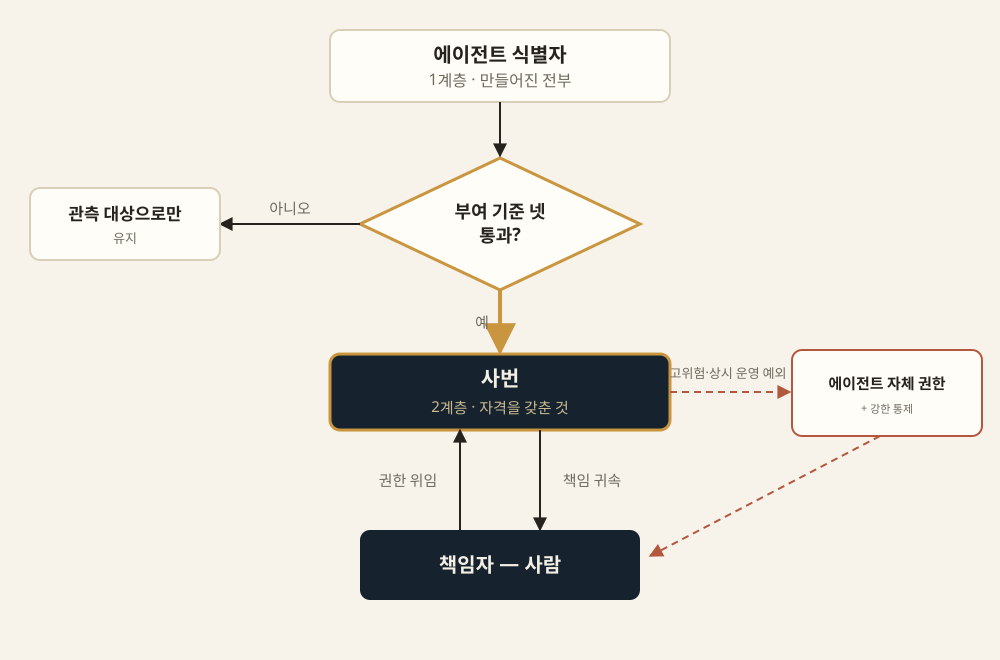
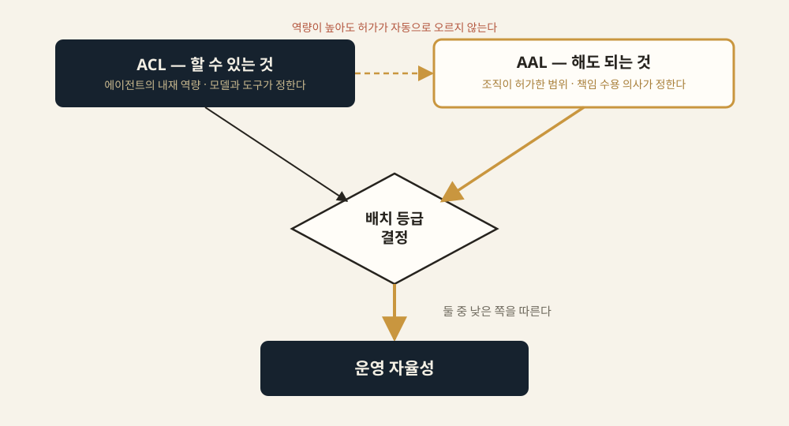
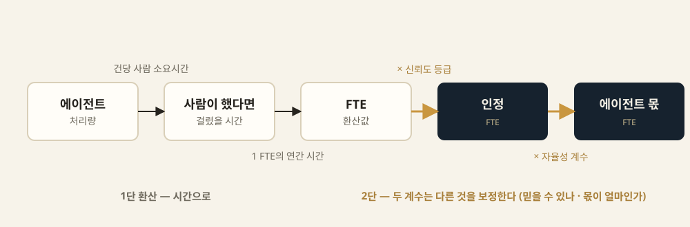
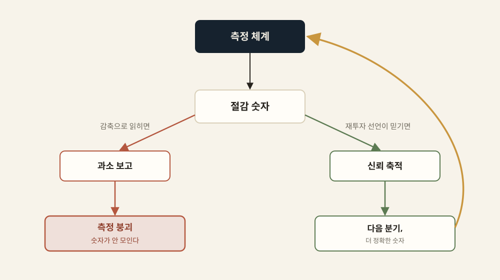
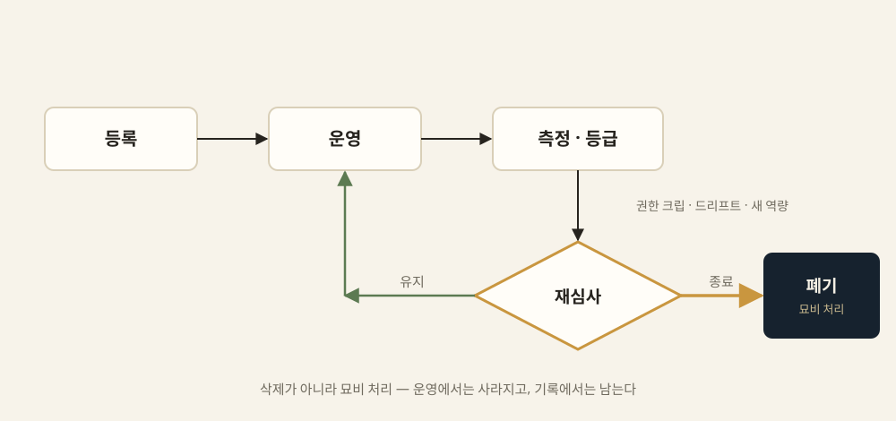

디지털 워커의 시대
AI 에이전트를 조직의 성과로 만드는 체계
"바텀업이 씨앗을 만든다. 그러나 씨앗은 저절로 수확되지 않는다."
— 탑다운이 할 일은 지시가 아니라 거두는 체계다
이 발표가 답하려는 하나의 질문
이 발표가 지키는 세 가지
먼저 인용하고 시작하는 문장
“AX팀을 만들어놓고 ‘너희가 AX팀이니까 빨리 AI로 자동화해봐’가 문제라는 말 같아요.
도메인 현업자가 주도하고 AX기술자가 서포트하면서 AI를 도입하는 게 가장 좋을 것 같은데.”
— GeekNews 사용자 snisty, 2026-04-09 토픽의 댓글. 개인의 공개 발언이며 조사 데이터가 아니다.
반박할 말을 찾지 못했다. 동의하기 때문이다. 그리고 그 처방이 이 발표가 도달하는 결론과 같다.
오늘 1시간 동안
- PART 1 전향 — 바텀업이 벽에 부딪혔다면, 위가 할 일은 정말 '정해서 밀어붙이는 것'인가
- PART 2 절차 — 체계의 입장권은 SOP다. 사람의 절차를 기계가 읽는 절차로
- PART 3 등록 — 여덟 칸, 청구서의 벽, 그리고 '할 수 있는 것'과 '해도 되는 것'
- PART 4 성과 — 무엇과 비교할 것인가, 그리고 절감분은 누구의 것인가
- PART 5 폐기 — 아무도 설계하지 않는 마지막 칸
- 실행 — 90일 로드맵과 세 개의 Gate
각 PART는 다음 주에 바로 쓸 수 있는 도구를 하나씩 남깁니다.
전향 — 위가 할 일은 따로 있다
개인은 배웠는데 조직은 남기지 못했다. 그 격차는 도구가 아니라 체계에 있다.
채택은 인터넷보다 빨랐다. 그런데
세 숫자의 출처 성격이 각각 다릅니다. 그 차이를 밝히는 것이 이 발표의 규율입니다.
그래서 위에서 정하면 되는가 — 아니다
이 발표의 관통선
바텀업이 씨앗을 만든다.
그러나 씨앗은 저절로 수확되지 않는다.
탑다운이 할 일은 지시가 아니라 거두는 체계다.
초기 구상은 "바텀업은 한계에 부딪혔으니 탑다운으로 전향한다"였습니다. 현장 데이터가 그 문장을 지지하지 않아 고쳤습니다.
위가 공급하는 것은 과제 목록이 아니다

기준 · 자원 · 제도 · 폐기 규칙 — 넷이다. 아이디어는 계속 아래에서 온다는 것이 전제다.
중앙이 무엇을 공급하면 현장이 사는가
- DORA 2025: AI는 증폭기다 — 최대 수익은 도구가 아니라 근본 조직 시스템에 대한 전략적 집중에서 온다
- 고성숙 조직만 불균형한 편익을 얻는다 — 버전 관리 · 관측성 · 내부 플랫폼
- 되돌릴 수 있게, 볼 수 있게, 다시 만들지 않게 — 전부 기준·자원·제도다
- 이 발표가 설계할 등록부·감사 로그·폐기 규칙이 하는 일과 같다. 대상만 코드에서 에이전트로 바뀐다
출처: DORA State of AI-assisted Software Development 2025
한눈에 보는 운영체계
발견에서 폐기까지, 아홉 단계. 각 단계는 앞 단계의 산출물을 입력으로 받는다.
발견 → 표준화 → 등록 → 인증
권한 → 운영 → 측정 → 보상 → 폐기
가운데를 관통하는 것이 Agent Registry · Agent ID — 단계가 아니라 전 생애주기를 꿰는 기반입니다.
체계를 세우다 부딪히는 아홉 개의 벽
- 목록은 있는데 실체를 모른다 → 재고 조사
- 가리려니 정의가 없다 → 관문·판별
- 절차가 적혀 있지 않다 → SOP
- 적어도 기계가 못 읽는다 → 변환
- 등록하려니 적을 칸이 없다 → 스키마
- 청구서가 막는다 → 계층과 위임
- 통제 기준이 없다 → 자율성 등급
- 성과를 못 잰다 → FTE 환산
- 재면 현장이 숨긴다 → 그리고 폐기
절차 — 체계의 입장권
적힌 절차와 실제로 하는 일은 원래 다르다. 그 간극이 광맥이다.
세어보면 다 있는데, 대보면 없다
무엇을 에이전트라 부를 것인가 — 세 정의
| 출처 | 정의의 핵심 |
|---|---|
| OpenAI (2025) | 사용자를 대신해 과업을 독립적으로 완수하는 시스템. LLM을 쓰더라도 실행 흐름을 제어하지 않으면 에이전트가 아니다 |
| Anthropic (2024-12) | LLM이 자기 프로세스와 도구 사용을 동적으로 지휘하며 수행 방식의 통제권을 쥔 시스템. 미리 짜인 워크플로와 구분 |
| Google 백서 (2024) | 가진 도구로 세계를 관찰하고 그에 작용하여 목표를 달성하려는 애플리케이션 |
정의는 방향을 준다. 그러나 판정은 해주지 않는다 — 그래서 관문이 필요하다.
재고 조사의 다섯 관문

관문의 순서가 곧 정의다. 값싼 판정을 앞에, 비싼 판정을 뒤에 둔다.
실무자에게는 질문 셋이면 된다
| 묻는 것 | 아니라면 | |
|---|---|---|
| 전제 | 우리 조직의 업무인가 | 대상 아님 |
| ① | 실제로 행동하는가 (쓰기·발송·처리) | 가볍게 등록만 |
| ② | 스스로 도는가 (사람은 예외에만) | 보통 등록 |
| ③ | 되돌릴 수 없는 일인가 (돈·대외·민감) | 등록 + 모니터링 |
통제의 강도는 똑똑한 정도가 아니라 되돌릴 수 없음의 정도로 정합니다.
붙일 곳이 없는 시스템은, 에이전트에게는 존재하지 않는다
“All teams will henceforth expose their data and functionality through service interfaces. (…) Anyone who doesn't do this will be fired.”
— 아마존 창업자 제프 베이조스의 2002년 전후 지시. 스티브 예기의 2011년 회고 문면이 정본처럼 유통된다.
과제 목록을 내리지 않았습니다. 모든 시스템에 붙일 곳이 있어야 한다는 기준 하나를 내리고 예외를 봉쇄했습니다 — 씨앗을 고르는 대신 밭을 갈았습니다.
적힌 절차와 실제로 하는 일
발견 → 대조 → 개선의 닫힌 루프

실행이 문서를 갱신하는 경로를 만들면 문서가 산다. 없으면 발행되는 순간부터 늙는다.
에이전트에게는 길목이 하나다
심사의 재료도 바뀝니다 — 진술 대신 로그, 표본 대신 전수, 연 단위 주기 대신 상시 대조.
등록 — 조직에 자리를 만든다
등록은 이름표가 아니라 책임과 권한의 연결이다.
사흘과 2년을 가른 것
| 래티스 (2024-07, 사흘 만에 철회) | 워크데이 (2025 발표 → 2026 출시) | |
|---|---|---|
| 배치 위치 | 인사 시스템 안, 사람 직원과 같은 레코드 | 별도 에이전트 레지스트리 (연동하되 분리) |
| 부르는 말 | "AI 직원(employees)" | "에이전트", "디지털 노동" |
| 프레이밍 | 사람과 동렬 | "직원처럼(like employees) 통치한다" |
| 관리 축 | 인사 평가 축에 편입 | 비용·ROI·접근권한·상태 |
결정적인 것은 조사 하나였습니다 — 직원으로 만들지 않고 직원처럼 통치했습니다.
등록한다는 건 여덟 칸을 채운다는 뜻이다

앞의 일곱은 순순히 채워집니다. 마지막 한 칸이 늘 비어 있습니다.
행위마다 허용 수준을 따로 적는다
한 칸에 "실행 가능"이라고만 적으면, 가장 위험한 행위가 가장 안전한 행위와 같은 권한을 얻습니다.
제도는 청구서에 부딪혀 모양이 잡힌다
사번을 주면 계정이 생기고, 계정이 생기면 상용 SaaS 라이선스가 계정 수만큼 과금된다.
해법: 에이전트에게 전용 식별 체계를 주고 책임지는 사람의 사번에 매핑한다. 타협처럼 보이지만 책임의 종착점이 사람으로 남아 오히려 더 옳은 설계가 됩니다.
두 계층과 책임자 매핑

1계층은 관측을 위한 식별자, 2계층은 생산성 관리를 위한 사번입니다.
에이전트 신원은 이미 제품이 됐다
규제도 등록을 요구합니다 — EU AI Act, 미 연방 AI 인벤토리, 중국 알고리즘 등록제, 한국 AI 기본법.
중간 등급이 가장 위험하다
승인 게이트는 왜 외양만 남는가
승인 축이 무너진 자리에서 환경 축이 질문 자체를 없앴습니다. 통제는 클릭이 아니라 구조에 심습니다.
할 수 있는 것과 해도 되는 것

"더 높은 역량이 자동으로 더 높은 허용 자율성을 뜻하지 않는다." 배치는 둘 중 낮은 쪽을 따릅니다.
낮춘 것이 결론일 수 있다
전수 로그는 누가 읽는가
사람의 자리는 사라지지 않고 이동합니다 — 체계 설계 · 표본 감사 · 예외 판정.
성과 — 세는 법과 그 대가
무엇을 재느냐보다, 잰 숫자를 어디에 쓰느냐가 먼저다.
1만 시간은 누구에게서 모인 것인가
“1만 시간은 근사하게 들린다. 그런데 그건 직원 2만 명에게서 각각 30분씩이다.”
— 자동화 업계 실무자의 서명 글. 조사 데이터가 아니라 경험담이다.
한 사람의 5년치라면 정원 하나가 남습니다. 2만 명의 30분씩이라면 아무것도 남지 않습니다.
첫 설계 결정은 기술이 아니라 기준선이다
| 증강 기준선 (인간 단독 대비) | 시너지 기준선 (둘 중 나은 쪽 대비) | |
|---|---|---|
| 효과크기 | g = +0.64 | g = −0.23 |
| 읽는 방식 | 담당자가 훨씬 잘하게 됐다 | 그 사람을 뺐으면 더 나았다 |
| 출판편향 검정 | ❌ 통과하지 못했다 | ✅ 통과했다 |
같은 370개 효과크기입니다. 기준선만 바꿨습니다. 대부분의 보고서는 전자를 재고 후자를 주장합니다. Vaccaro et al., Nature Human Behaviour 2024
그렇다고 사람을 빼라는 뜻은 아니다
출처: Hemmer et al., European Journal of Information Systems 2025
두 단 환산과 두 계수

신뢰도는 '이 숫자를 믿을 수 있나', 자율성은 '이 중 에이전트 몫이 얼마인가'. 곱해 쓰지만 이중 할인이 아닙니다.
재는 자리에서 지킬 것
- 평균 성공률 하나로 판정하지 않는다 — "몇 번을 연달아 시켜 한 번도 안 틀렸는가"가 더 쓸모 있다
- 과업 수준 이득을 조직 성과로 곱하지 않는다 — 과업 이득의 일부만 최종 산출물로 통과한다
- 자기보고 등급에는 폐지 시한을 못 박는다 — 실측으로 옮겨갈 유인을 만드는 것이 목적이다
- 자기 숫자부터 의심한다 — 우리가 인용하는 연구의 후속도 함께 본다
이 발표에서 가장 중요한 문장
절감이 곧 감원으로 읽히는 순간, 현장은 성과를 숨긴다.
그러면 측정 체계 자체가 붕괴한다.
측정이 정확해질수록 그 숫자의 위협도 정확해집니다. 도구를 개선할수록 숨길 유인이 커집니다.
같은 숫자, 두 개의 운명

감축으로 읽히면 과소 보고 → 측정 붕괴. 재투자 선언이 믿기면 신뢰 축적 → 더 정확한 숫자.
절감분의 사용처는 셋뿐이다
| 사용처 | 내용 | 현장의 반응 |
|---|---|---|
| 재투자 | 확보한 시간을 새 일, 더 가치 있는 일로 | 협조적 |
| 품질·처리량 | 같은 인원으로 더 많이, 더 정확하게 | 중립 |
| 감축 | 정원 조정 | 강한 저항 |
세 줄은 서로를 오염시킵니다. 첫 번째를 하겠다고 말해도 세 번째가 가능하다는 것을 모두가 알면 선언은 믿기지 않습니다.
측정보다 먼저 선언할 것
- 이 체계의 절감 수치는 인력 조정의 근거로 쓰지 않는다 — 기한 명시, 재논의 없으면 자동 연장
- 확보된 시간의 기본 용도는 재투자다 — 바꾸려면 공개 논의
- 수치는 조직 단위로만 집계하며 개인별로 분해하지 않는다
- 이 체계는 에이전트의 활동을 기록한다 — 구성원 개인의 도구 사용 내역은 대상이 아니다
말하지 않은 기본값은 기본값이 아닙니다. 사람들은 말해지지 않은 것을 최악으로 해석합니다.
끝 — 설계되지 않은 마지막 칸
폐기는 삭제가 아니라, 권한을 거두고 기록을 남기는 운영 절차다.
마지막 칸은 왜 비는가
0건은 지어내지 않고 부재 자체를 발견으로 다뤘습니다.
초기 구상을 철회하며
도구는 이미 폐기를 설계했다.
조직이 아직 안 켰다.
— Entra의 후원자 자동 승계, EU AI Act의 recalled, 미 연방 인벤토리의 Retired, 자율성 인증서의 갱신 요건
"아무도 설계 안 했다"가 맞다면 처방은 간단합니다. 이미 설계돼 있는데 안 쓰인다면, 문제는 설계 능력이 아니라 켜는 결정입니다.
폐기 체크리스트 — 일곱 항목
- ① 공식 폐기 워크플로 (누가 요청하고 누가 승인하는가)
- ② 자격 증명·토큰 즉시 폐기 (전부 목록에 있는가)
- ③ 아웃바운드 접근 제거 · ④ 인바운드 호출 차단
- ⑤ 메모리·데이터 정화 (보관·익명화·삭제를 구분했는가)
- ⑥ 감사 추적 보존 — 지우지 않고 남기는 유일한 항목
- ⑦ 폐기 후 잔여 리스크 모니터링
이 표의 칸들은 벤더의 발명이 아니라 규제 스키마가 이미 요구하는 자리입니다.
등록에서 폐기까지의 회로

삭제가 아니라 묘비 처리 — 운영에서는 사라지고, 기록에서는 남습니다.
90일 도입 로드맵
전사 제도를 한 번에 완성하는 것이 목표가 아니다. 대표 업무 3~5개로 전 구간을 한 번 통과시킨다.
세 구간, 세 개의 Gate
GATE 1 — 실체와 책임자가 확인됐는가
GATE 2 — 제한된 운영을 허가할 수 있는가
GATE 3 — 확대·보완·중단 중 하나를 결정했는가
30일마다 산출물보다 결정 근거를 남깁니다. 보완이나 중단도 정상적인 결과로 기록합니다.
다음 주에 할 수 있는 것
기억할 세 문장
① 씨앗은 아래에서 온다. 위가 공급할 것은 목록이 아니라 기준·자원·제도·폐기 규칙이다.
② 통제의 강도는 똑똑한 정도가 아니라 되돌릴 수 없음의 정도로 정한다.
③ 절감이 감원으로 읽히는 순간 숫자는 숨는다 — 측정보다 선언이 먼저다.
디지털 워커의 시대
AI 에이전트를 조직의 성과로 만드는 체계
각 장이 남긴 아홉 개의 워크시트는 부록 A에 있습니다.
AX 3부작 — 『AX를 만들다』(실전기) · 『나는 이 게임을 안다』(진단) · 이 책(처방)